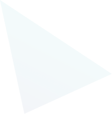
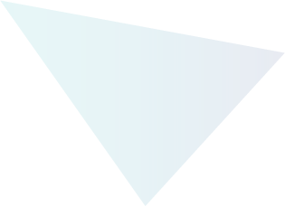
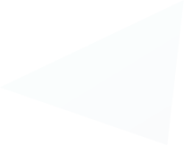
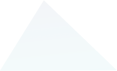
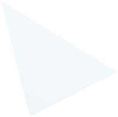
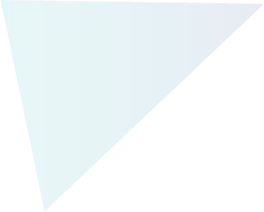
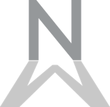
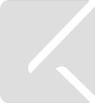

<!doctype html><html lang="en"></html><head><meta charset="utf-8"/><title>Orfs</title><meta name="description" content="The HTML5 Herald"/><meta name="author" content="SitePoint"/><meta name="viewport" content="width=device-width, initial-scale=1.0"/><link rel="shortcut icon" href="../../images/png/favicon.ico"/><link rel="stylesheet" href="../../styles/css/main.css?v=1.0"/><!--[if lt IE 9]>
<script src="https://cdnjs.cloudflare.com/ajax/libs/html5shiv/3.7.3/html5shiv.js"></script>
<![endif]--><body><div class="header"><div class="global-container header-container"><div class="container"><div class="row"><div class="col-lg-2 col-md-2 col-sm-2 col-xs-8"><a class="icon-logo" href="index.html"></a></div><div class="col-lg-10 col-md-10 col-sm-10 col-xs-4"><ul class="menu"><li class="active"><a href="index.html">Products</a></li><li><a href="services.html">Services</a></li><li><a href="solutions.html"> Solutions</a></li><li><a href="contact.html">Contacts</a></li></ul></div></div><i class="icon-hamburger"></i></div></div></div><div class="homepage"><div class="container"><div class="page-container"><div id="pageTitle"><div class="text-center small-text">Connecting creative, knowledge and commerce to transform brands and grow businesses</div><div class="caption m48">Featured Works</div></div><div class="content-area"><div class="shapes"> <span class="first">W<span class="hide-text none-visible">ISITOR</span></span><canvas id="w" width="130" height="190"></canvas></div><div class="shapes"><span class="first">V<span class="hide-text none-visible">OSU</span></span><canvas id="v" width="130" height="190"></canvas></div><div class="shapes"><span class="first">N<span class="hide-text none-visible">otion's </span><span class="shapes-small">M</span><span class="hide-text none-visible">otion</span></span><canvas id="n" width="130" height="190"></canvas></div><div class="shapes"><span class="first">T<span class="hide-text none-visible">ASKNIGHT</span></span><canvas id="t" width="130" height="190"></canvas></div></div><div class="w-content"><p>İşletmelerin, kurum veya kuruluşların, ziyaretçilerine sundukları internet hizmetini, bir sosyal ağ hizmetine dönüştüren, web tabanlı müşteri ilişkileri otomasyonu ve yeni nesil elektronik pazarlama aracıdır.</p><p><ul class="home-list"><li>Hızlı ve Güvenli İnternet Erişimi</li><li>Sosyal WiFi</li><li>İstatistik Yönetimi    </li><li>Kesintisiz İletişim Ağı</li><li>Sosyal Yönelim Analizleri</li></ul></p><div class="triangles"></div><i class="icon-back"></i></div><div class="v-content"><p>Android işletim sistemini temel alan özelleştirilmiş bir arayüze sahip akıllı TV donanımıdır. Vosu Smart Home, ev kullanıcısına yönelik hayatı kolaylaştıran, afet ve kazalara karşı önlem alabilmeyi sağlayan yazılım ve donanıma sahip aygıtlardan oluşan entegre bir sistemdir.</p><p><ul class="home-list"><li>Android & Smart TV</li><li>Digital Integration</li><li>Smart Home Systems   </li><li>Domotics</li><li>Total Home Solutions</li></ul></p><div class="triangles"></div><i class="icon-back"></i></div><div class="n-content"><p>Aklınıza gelen video production fikirlerinize sizi destekleyebilecek prodüktörler arayabilir, veya kendi fikrinizi uygun olan bir prodüksiyon ekibine dünyanın neresinde olursanız olun çektirebilirsiniz. Notion’s Motion video prodüksiyon marketi ve online proje yönetim platformudur.</p><p><ul class="home-list"><li>Video Production Marketplace</li><li>Project Management</li><li>Independent Film Making  </li><li>Animation Studio</li><li>Script Engine</li></ul></p><div class="triangles"></div><i class="icon-back"></i></div><div class="t-content"><p>Sizin hatırlamayı istediğiniz notlarınızı hangi duygunuza ait ise o duygunun başlığında toparlar ve uygun duygu durumunuzda size hatırlatır. Tasknight gün içerisinde aklınızda uçuşan düşünceleri düzene sokmak için geliştirilmiş bir yapay zeka projesidir.</p><p><ul class="home-list"><li>Artificial Intellegence</li><li>Mobile App</li><li>Emotion Recognation </li><li>Deep Learning</li><li>Task Management</li></ul></p><div class="triangles"></div><i class="icon-back"></i></div></div></div></div><script type="text/javascript" src="../../build/vendors.js"></script><script type="text/javascript" src="../../build/all.js"></script></body></head>